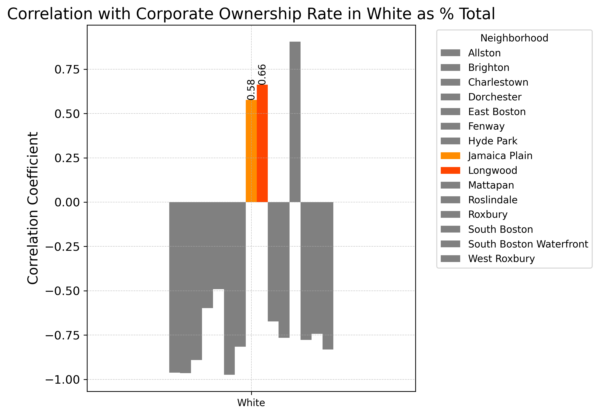
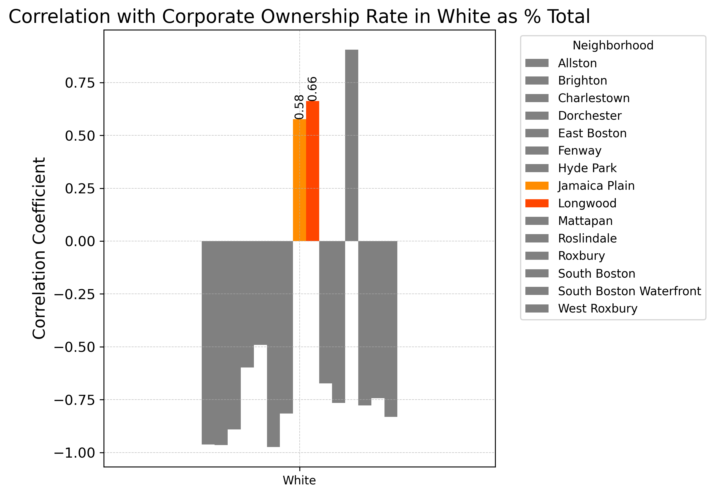

In recent years, the United States has witnessed a significant surge in both corporate ownership of properties and eviction rates, trends that can have profound implications on the socio-economic fabric of many communities. These issues have been particularly pronounced in cities like Boston, where a complex interplay of factors contributes to housing instability. Our team drew upon extensive data and research to explore the nexus between corporate ownership rates of properties and different characteristics of neighborhoods, discovering broader consequences of corporate ownership on communities in Boston.
A sweeping analysis of eviction records by the New York Times has highlighted an alarming increase in evictions not just in Boston but across America, with nearly one million American households facing eviction judgments in 2016 alone.[1] This national crisis reflects deep-seated issues of housing affordability and tenant rights under increasing pressure from corporate property ownership.
Evictions, a distressing reality for many American families, cast long shadows over communities, bringing forth a cascade of detrimental effects that transcend the immediate loss of a home. A review by the Harvard Medical School shows that the specter of eviction often forces families into substandard housing in less safe neighborhoods, exposing them to environmental hazards and high crime rates, and instigating a cycle of instability that is difficult to break.[2] The educational disruption for children, often leading to poor academic performance and diminished future prospects, adds to the intergenerational impact of evictions. The loss of community support systems, essential for emotional well-being and practical assistance, exacerbates the isolation that evicted families face.
In Boston specifically, the problem of higher eviction rates has been linked to the rise of corporate-owned rental properties. These entities often prioritize profit over tenant stability, leading to practices that can exacerbate housing insecurity. A report by Homes for All Massachusetts conducted between 2020 and 2021 reveals that neighborhoods with concentrated corporate ownership experience significantly higher eviction filing rates.[3] This pattern is not coincidental but a direct consequence of investment strategies that favor returns over community welfare. Our housing data shows that Boston’s eviction rate has been heavily correlated to corporate ownership rate in Boston over the last three years, with evictions showing a strong upward trend since 2020 and corporate ownership rates rising in all Boston neighborhoods over the last twenty years.
Although corporate ownership is increasing throughout Boston, there are some neighborhoods that are experiencing it more than others. Furthermore, corporate ownership can affect different neighborhoods differently, depending on neighborhood characteristics such as race, age, and median income. For example, HFA Mass found that the impact of corporate-driven evictions is disproportionately felt by communities of color and low-income families. In Massachusetts, their data demonstrates that neighborhoods predominantly inhabited by people of color and those with higher proportions of single mothers also see more frequent eviction filings. This demographic targeting deepens existing inequalities and undermines efforts toward social equity. Using our housing data, our team put together three case studies below detailing how specific Boston neighborhoods have been experiencing the adverse impacts of corporate ownership.
The Jamaica Plain and Longwood neighborhoods in Boston stand as striking examples of how shifts in corporate ownership rates can ripple through communities, altering their demographic makeup. Our comprehensive analysis of Boston's housing data over the last two decades reveals a notable trend: as corporate ownership increases, the racial and ethnic demographics of a neighborhood can change dramatically. In Jamaica Plain and Longwood, this phenomenon has manifested as an increase in the white population alongside a decrease in the Black and Hispanic residents. These neighborhoods, once reflective of a diverse urban tapestry, have seen their cultural and racial landscapes transform.
Below are three graphs plotting the correlation between corporate ownership rate and the proportion of the hispanic, black, and white population, respectively, as a percentage of the entire population, in each of the fifteen Boston neighborhoods we have housing data for. The correlations are shown over the time span of 2010 to 2020. Here, we especially call your attention to the Jamaica Plain and Longwood neighborhoods as they stand out amongst their peers.

 
